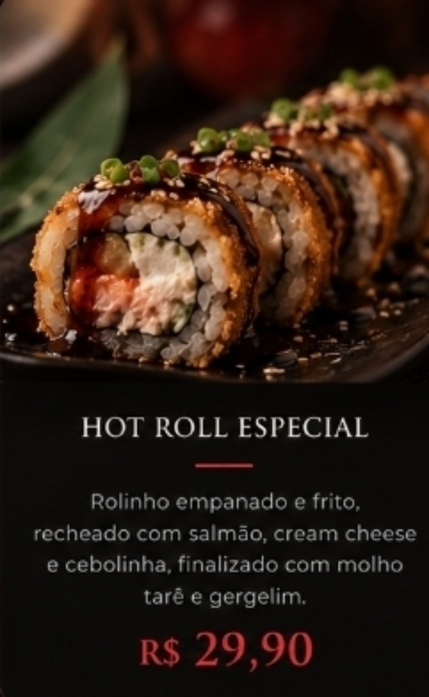

A ESSÊNCIA DO AKARI
Nossa História

Uma paixão pela culinária japonesa
O Akari Sushi celebra a riqueza da culinária japonesa com atenção aos ingredientes, ao preparo e à apresentação de cada prato.
Buscamos criar um ambiente acolhedor onde os sabores se encontram e cada refeição se transforma em um momento especial.
Este texto é provisório. Substitua-o pela história oficial do restaurante quando tiver as informações.